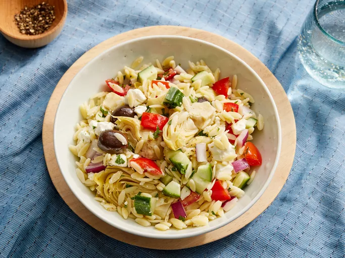

Greek Orzo Salad

Description
This Greek orzo salad is a delicious, colorful dish with artichoke hearts and feta.
Ingredients
- 1 ½ cups uncooked orzo pasta
- 2 (6 ounce) cans marinated artichoke hearts
- 1 cucumber, seeded and chopped
- 1 tomato, seeded and chopped
- 1 red onion, chopped
- 1 cup crumbled feta cheese
- 1 (2 ounce) can black olives, drained
- ¼ cup chopped fresh parsley
- 1 tablespoon lemon juice
- ½ teaspoon dried oregano
- ½ teaspoon lemon pepper